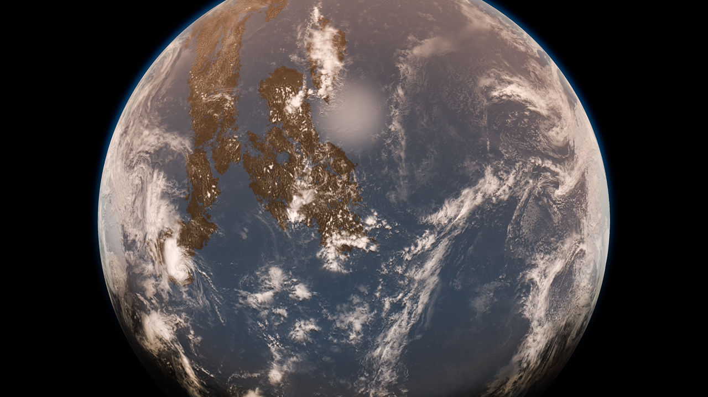

|
NEWS
3.9.21
My new paper, exploring the link between mantle minerals' water capacity and the size of Earth's early surface oceans, is now published online in AGU Advances. This research is featured by Science, Eos, and several mass media sites.

Earth 3 to 4 billion years ago, with an atmosphere muddied by haze, minimal landmasses, and a global ocean.
© Alec Brenner, Harvard.
12.7.20
Junjie Dong presented a poster (virtually) "Subsolidus phase transition in Mg2SiO4 at transition zone conditions", at the 2020 AGU Falling Meeting.
archived...
|
RESEARCH
Phase changes and mantle mineralogy
Phase diagram of Mg2SiO4
Water in nominally anhydrous minerals (NAMs) and deep water cycle
Water and iron in Earth's transition zone
Volume of Earth's early oceans
Water in Martian mantle
Fate of subducted carbonates and deep carbon cycle
Melting curve minimum of BaCO3
Wetting behavior of Fe-C melt
Reactive preservation of subducted carbonates
Miscellaneous materials at high pressure
Melting curve of KCl
publications...
|
CONTACT

Junjie "JJ" Dong (CV)
Hoffman 105
junjiedong@g.harvard.edu
Google Scholar | @2jdong
|